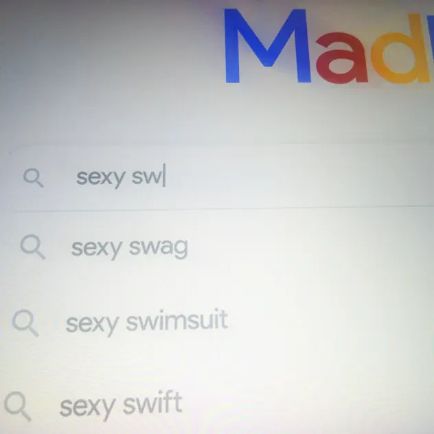

Новая сцена Портрет
Как убедить человека, что он тебе безразличен, если целый припев продолжаешь обращаться к нему? В «так похуй» madk1d собирает злость, браваду и желание задеть в одну цепкую фразу. Разбираемся, почему за демонстративным равнодушием здесь интересно наблюдать.
Равнодушие с адресатом
madk1d — музыкант из Томска. Для знакомства с ним можно начать с «так похуй», трека с альбома sexyswag. Здесь сразу возникает конфликт: герой объявляет, что давно оставил человека в прошлом, и тут же выдаёт раздражение его новой жизнью. Заявленная дистанция оказывается хрупкой. Это прочтение текста песни, а не вывод о личных переживаниях артиста. Профиль madk1d, страница трека.
На тебя давно так похуй, я хаваю всю сотку
Разбить бы ебасос твоему новому уёбку
Я в Питере пью водку, давать шалаве в глотку
Я хаслил в интернете, посылал нахуй работу
Что прячется внутри припева
В первой строке сталкиваются два движения: оттолкнуть адресата и немедленно переключить внимание на себя. Разговорное «хаваю» делает вторую половину фразы грубой и телесной. Она усиливает образ человека, который действует с избытком, будто любое промедление позволит чужому присутствию снова занять место в голове.
Слово «давно» особенно показательно. Оно должно подтверждать, что всё уже закончилось. Но возвращение припева позволяет услышать в этом утверждении попытку убедить самого себя. Чем настойчивее герой объявляет о равнодушии, тем заметнее становится адресат его речи.
Во второй строке заявленная дистанция сменяется фантазией о насилии над новым партнёром адресата. Герой обращает злость на соперника, и это делает его равнодушие ещё менее убедительным. Чужая новая связь всё ещё задевает его настолько, что он хочет в неё вмешаться. В таком прочтении грубость работает как попытка вернуть себе преимущество в ситуации, которую герой не контролирует.
Третья строка переключает речь на собственную жизнь: другой город, алкоголь и сексуальную браваду. Этот набор можно услышать как демонстрацию свободы — у героя якобы достаточно впечатлений, чтобы не думать об адресате. Но унизительное описание женщины продолжает тот же способ самоутверждения через обесценивание других. Меняется предмет разговора, а потребность выглядеть сильнее остаётся.
Четвёртая строка добавляет к этому образу заработок в интернете и отказ от обычной работы. Разговорное «хаслил» поддерживает образ человека, который сам ищет возможности заработать. Герой предъявляет ещё один аргумент в пользу собственной независимости: он сам выбирает, чем заниматься. Однако в последовательности припева эта самостоятельность звучит как часть всё той же речи перед адресатом — как доказательство того, насколько хорошо он устроился без него.
Весь фрагмент движется от объявления безразличия к конфликту, а затем — к рассказу о собственных удовольствиях и независимости. Его цепкость держится на этом несоответствии: герой предлагает слушателю образ человека, которому всё равно, но продолжает объяснять, почему он сильнее и свободнее других. Бравада поддерживает дистанцию, которую само обращение к адресату ставит под сомнение. Текст песни.
Слушать за словами
При повторном прослушивании попробуй сосредоточиться на подаче1. Насколько уверенно звучит заявление о безразличии? Что происходит с ним после куплета? Один и тот же припев может восприниматься сначала как вызов, затем — как застрявшая мысль, к которой герой снова возвращается.
- Как обращение к другому человеку соседствует с рассказом о себе.
- Как меняется восприятие припева после куплета.
- Что сильнее определяет героя: уверенность, злость или желание произвести впечатление.
